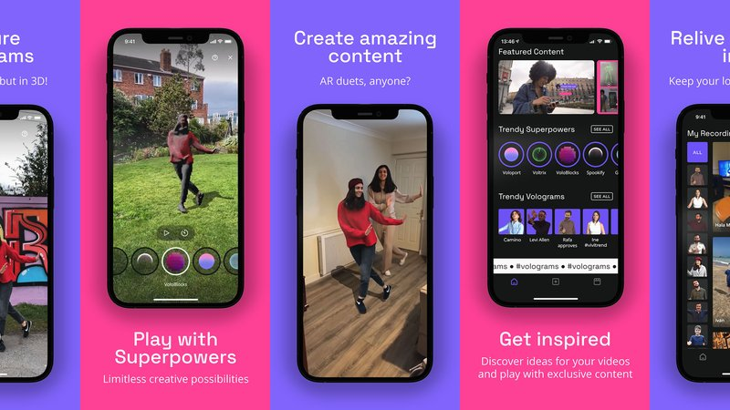
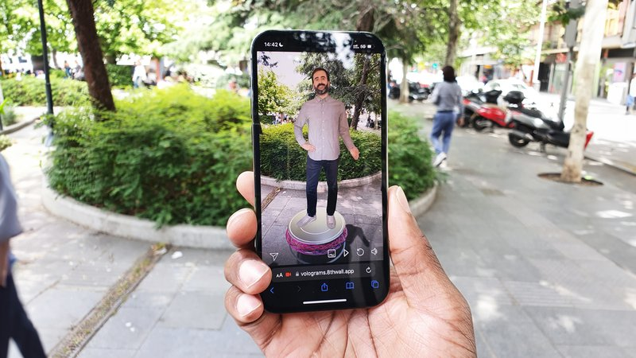
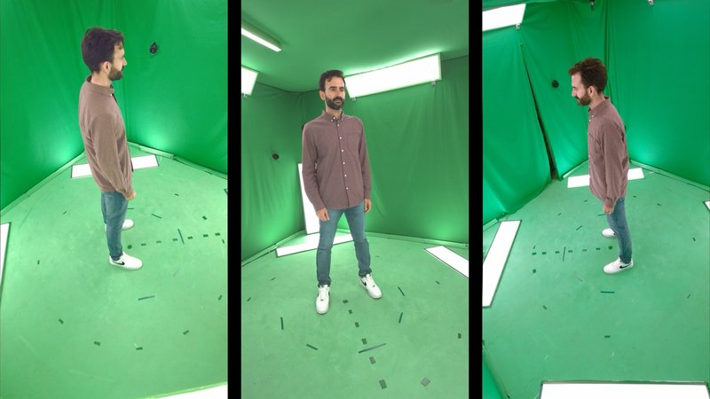
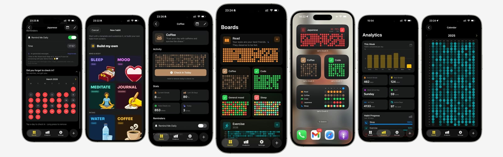
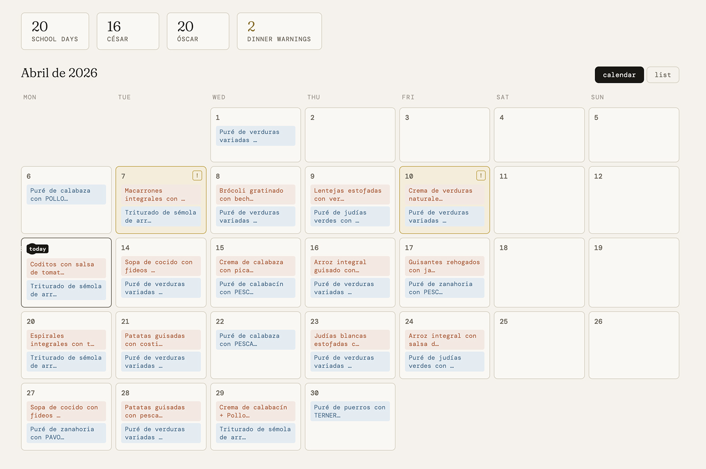

Consumer app
Volu
The first mobile app for volumetric video. Point a single phone camera at someone and AI rebuilds them as a moving 3D person. Over 3M models processed, and the AWE Auggie Award for Best AI Product in 2022.
Product · AI · Spatial · Entrepreneur
Product enthusiast: strategy, design, code, go-to-market, and every other bit. I co-founded Volograms, and I've been the hands-on product person for 8 years, turning AI and 3D research into products people actually use.
Products built on one idea: AI that turns ordinary video into 3D people. For consumers, creators, global brands and production studios. Each one started as an R&D project.

Consumer app
The first mobile app for volumetric video. Point a single phone camera at someone and AI rebuilds them as a moving 3D person. Over 3M models processed, and the AWE Auggie Award for Best AI Product in 2022.

Brands
Volograms that open from a link, no app required, inside an experience the brand fully controls: its name, its call to action and its button, all configurable. Marketing and communication right out of the box, used by brands like HUGO BOSS and Mars Wrigley.
My role[e.g. defined the product, designed the flow, ran the launch]

Studios & sports
Multi-camera capture, in the studio or on location. Computer vision fuses every angle into one high-end 3D asset for XR, virtual production and sports. It went from a research paper to a business of its own.
My role[role in going from research paper to business]
Apps and tools I designed, built and shipped on my own, with AI in the loop from first prototype to App Store.
New · Oct 2026
An iPhone camera app for touchscreen dive housings: oversized controls you can hit with gloves on, haptic feedback, and separate buttons for photo and video. Built on native iOS components. [how AI helped build it]
TimelineIdea to App Store in [X weeks], on my own.

Productivity
An iOS app for turning goals into habits. Track your progress, keep the momentum going, and actually follow through. [how AI helped build it]
Smart Home
Turns an iPad into a smart dashboard that wakes up when someone walks up to it. Presence detection runs on the device, so nothing leaves your home. [how AI helped build it]

Smart Home
Claude reads the school's PDF menus and turns them into a web calendar and a Home Assistant dashboard. Built so dinner never repeats what the kids had for lunch.
How I build
I prototype with [Claude, Claude Code, Cursor...], put it in front of real users fast, and ship. MadiCam went from idea to the App Store in [X weeks], on my own. At Volograms I used the same loop to test features before committing the team to them.
Featured in
I've been working in 3D reconstruction, volumetric capture, and computer vision for over 16 years, starting at the GTI lab at Universidad Politécnica de Madrid and V-SENSE at Trinity College Dublin, and since 2018 at Volograms, where research and product development go hand in hand.
My work has been published in ECCV, ACM SIGGRAPH, Computer Graphics Forum, IEEE ISMAR and more; and I still engage deeply with the research community reviewing for WACV, IEEE Transactions on Multimedia, and IEEE VIS, among others.
At Volograms I lead EU-funded initiatives including INVICTUS, Vol3Dedu, and open-call projects within Imagine-B5G and 6G-PATH.
AI, spatial computing, entrepreneurship, idea validation... I lecture at IE University's MBA programs and have given talks and workshops at Trinity College Dublin, UPM, UAM, UCM, and events across Europe and the US.